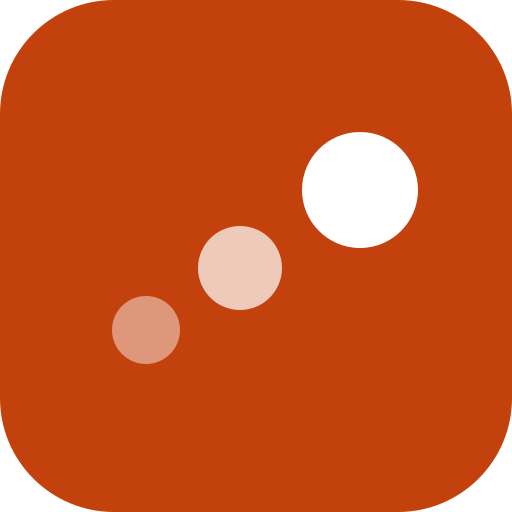
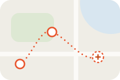

BostonHacks 2026 · Bos(tons) of Eats and Streets
Every outing is a trail: stops joined by a dotted line, with small tasks called crumbs along the way. The palette is warm paper, white cards and near-black type, with one orange accent.
01
The two core screens, built only from the classes in styles/components.css. Sizes are CSS pixels on a 390 px phone. Both screens scroll.
Cafés · Anytime · Curated
70 Charles St, Beacon Hill
Crumb: order a shakshuka or a pastry
Walk 8 min via Boston Common
Lagoon & footbridge
Crumb: find the Make Way for Ducklings statues
Green Line, Arlington → Copley
Back Bay
02
Paper and ink do most of the work. Orange is the only accent: trails, the primary action and orange labels. Blue and green appear only as status (scheduled and finished). The number on each chip is the contrast of the text shown on it.
--color-paper#F7F6F2App background, bottom sheets--color-white#FFFFFFCards, tabs, buttons, tab bar--color-ink#1B1916Type, active tab, selected filter--color-crumb-strong#C2410COrange text, primary button, + button--color-crumb#E8552DTrail dots and rings only. Never text.--color-blue#1D4ED8Scheduled trails: "Sat 2:00 PM", "Going"--color-green#15803DFinished trails and done crumbs--color-ink-2#57534C · 7.1:1Stats, addresses--color-muted#736E66 · 4.7:1Meta, labels--color-line-strong#D6D2C8Tab outlines--color-line#E7E4DDCard borders--color-sand#EFEDE6Map land, skeletons--color-crumb-deep#9A3412Hover, pressed--color-crumb-tint#FDEDE6--color-blue-tint#E6EDFC--color-green-tint#E3F2E7--color-crumb-pale#F7C2B1 · logo--color-crumb-soft#F08A69 · logo--map-park#DDE8D3--map-water#D8E6F0--map-road#FBFAF7MBTA line colors (--line-red, --line-green, …) appear only as a small dot next to a transit step, such as "Green Line, Arlington → Copley".
03
There's one family, Inter, from Google Fonts. Titles are heavy with tight tracking. Everything else is regular to semibold. Hierarchy comes from size and weight, never from extra colors.
04
Everything is soft: generous radii, hairline borders and low, warm shadows. Interactive pills (tabs, buttons, icon buttons) are fully round.
--radius-sm--radius-md--radius-card--radius-sheet--radius-pill--shadow-card--shadow-float--shadow-sheet--shadow-fabstroke-dasharray: 0 8.5, round caps) in --color-crumb.tools/trail.js draws it at the real pixel width so the dots never stretch..num-ring), in lists and on the map.05
Every class here lives in styles/components.css. Icons come from Lucide (ISC license), drawn with a 2 px stroke in currentColor.
Anytime (default): orange eyebrow, distance, stop labels, rating.
.trail-card--scheduled: blue date and time, head count, and a Join (or Going) action.
.trail-card--done with .trail--done: a green trail with filled end points and no stats row.
The selected filter is solid ink, and the others are white with a --color-line-strong outline. The row scrolls sideways when it overflows.
Use one orange button per screen. Over the map, use .icon-btn--float. .is-on fills a saved bookmark.
70 Charles St, Beacon Hill
Crumb: order a shakshuka or a pastry
Lagoon & footbridge
Crumb: find the Make Way for Ducklings statues
Green Line, Arlington → Copley
Back Bay
Mid-run: .is-done on a stop turns its dots and crumbs green, and .num-ring--current marks the next stop.
The tabs are Explore, Map, + (make a trail), Saved and You. The active tab is ink and bold. The + button is the only raised element.
06
These are original SVGs in assets/svg/. Regenerate them from the repo root with python docs/tools/build_assets.py docs/assets/svg.
logo-mark.svg · three crumbs, warming toward the end
app-icon.svg · home screen, faviconstop-ring.svg · stop-done.svg · stop-number.svg (use .num-ring for live numbers)trail-divider.svg · section breaks and onboarding
Save one from your feed, or make your own. It only takes two stops.
empty-trail.svg · empty states: a trail waiting for its next stop07
Quick checks before you ship a screen.
--color-crumb-strong for orange text.It passes AA on white and paper.--color-crumb.It's for dots and rings only (3.6:1).